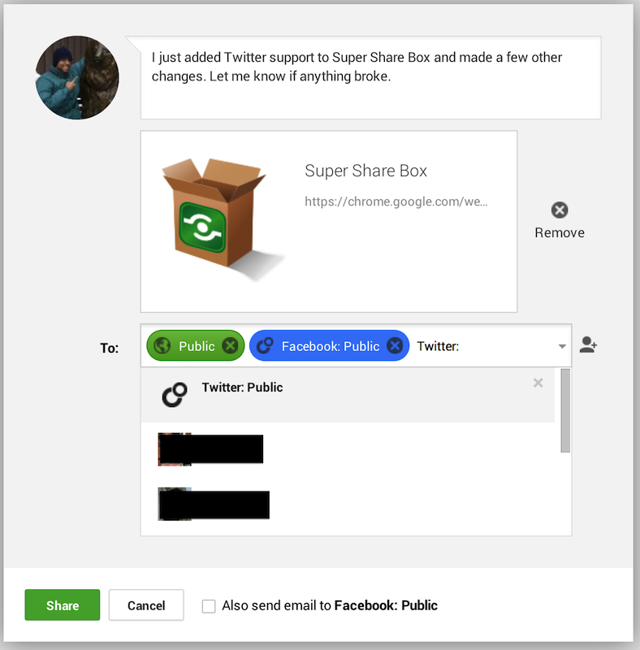
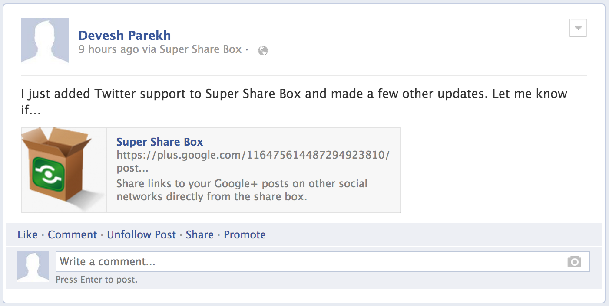
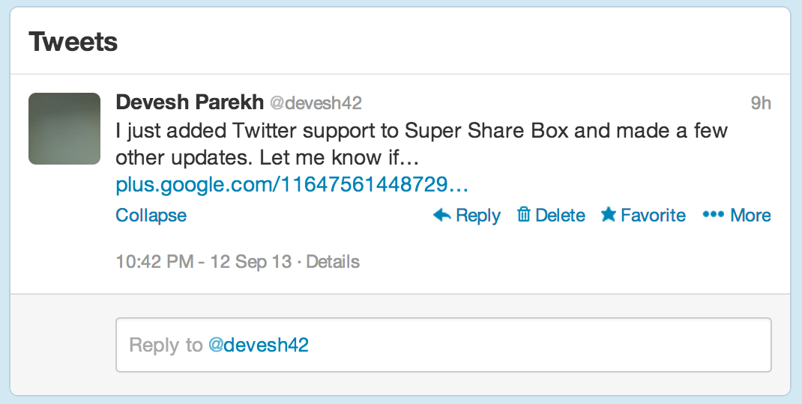

Just Let Me Download It!
Get it from the Chrome Web Store.
Introduction to Social Network Lock-In
The ability to move to another service if you're unhappy with your current one is very important. With email, for example, you can forward your mail to your new address and use IMAP to copy over your old email (look for those two features before using an email service). With social networks, you can copy over your photo albums (http://thenextweb.com/apps/2011/10/12/facebook-photo-importer-lets-you-transfer-hundreds-of-photos-in-minutes/), but you can't copy over your friends. If you can't move your friends, you're essentially locked in to the service. The service loses an important incentive to improve itself, and it can proceed directly to monetizing you for all you're worth in ways you might not agree with, and any attempts to move by yourself will simply make you an outcast.
How Super Share Box Fixes Social Network Lock-In
Super Share Box is an experiment in breaking lock-in. Instead of directly copying your friends to a new social network, it automatically shares links to your posts on the new social network to your old social networks where your friends can see them (in the Google+ case, by choosing your individual friends and friend lists from the old social network directly in the share box). Since the posts on the old social network will just contain truncated text and a link, your friends on the old social network will have to click through to the new one to see your full post, and they are more likely to interact it with it there.
Super Share Box currently only supports Google+ as the new social network and Facebook and Twitter as the old social networks. The basic concept should translate into any combination of from/to networks, and the goal is to generalize the extension to simplify migration to any social network. Pull requests appreciated. 
How it Works
Super Share Box wraps XMLHttpRequest in the iframe that contains the Google+ share box (it works on Google+, YouTube, and any other page with the +1 Button), looks for the request to load circles, and inserts pseudo-circles and pseudo-friends from your other social networks into the response. Then it intercepts post requests, extracts any pseudo-circles and pseudo-friends in them, and posts to them in the social network they came from.
Unsolved Problems in Social Network Lock-In
- Copying old posts and the interactions on them to the new social network.
Authors and Contributors
Original hack by @devesh.
Significantly improved by....